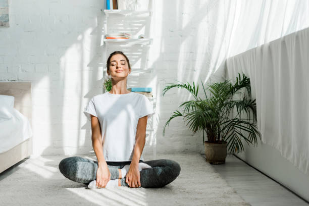

Un poco sobre mi

Hola, soy Neftali. Estoy acá para ayudarte y poder conectar con vos de la manera que más te resuene. Como podes ver, soy una persona muy curiosa e inquieta, con ganas de trabajar en mi y poder brindar mi conocimiento ayudando a otros.
Siento que es un trabajo y búsqueda infinita en trabajar sobre tu amor propio, en mi caso.. me ayuda mucho a mi misma , pero también me gusta poder aportar mis conocimientos a otros. Espero ser de gran ayuda para ti.
Formación
- 2010: Reiki Usui, Nivel 1 y 2 , Cordoba , Argentina
- 2011: Reiki Usui, Nivel 3, Cordoba , Argentina
- 2013: Sanacion Pranica Nivel Básico, Cordoba, Argentina
- 2014: Sanacion Pranica Nivel Avanzado, Cordoba, Argentina
- 2016: Profesora de Educación Física , IPEF, Cordoba, Argentina
- 2019: TTC Teacher Training Course 200hs- Yoga- Rishikesh,India
- 2019: Taller Yoga para Niños, Rishikesh, India
- 2022: Lectora Registros Akashicos, Nivel 1 y 2, Cordoba, Argentina.
Cómo puedo ayudarte:
Ahora te cuento como puede beneficiarte al elegir alguna de estas prácticas

Yoga:
- Hacer yoga por la mañana ayuda a despertar la mente y el cuerpo de forma gradual; hacerlo por la tardes, sirve para relajarnos y librarnos de las tensiones de la jornada.
- Mejora la concentración. Fomenta la fuerza, la resistencia y el control emocional.
- Reduce el estrés y la ansiedad.
- Refuerza la confianza en uno mismo y aumenta la autoestima.
- Ayuda a afrontar el día con energía y positividad.
- Mejora la postura corporal.
- Tonifica el cuerpo y nos mantiene en forma porque exige hacer las asanas de forma correcta y fluida; se hace mucho ejercicio, aunque a veces no se note.
- Las técnicas de respiración que se practican favorecen un sueño de calidad y se duerme mejor.
- Elimina toxinas. Especialmente el Hot Yoga, que se practica a altas temperaturas y con gran humedad. Además, el calor ayuda a ganar flexibilidad.
- Mejora la digestión porque activa nuestros órganos internos y reduce la inflamación abdominal, lo que favorece el tránsito intestinal.
Reiki:
- Reducir el estrés.
- Aliviar dolores crónicos como la artritis, reuma, artrosis, lumbares, dolores menstruales o migrañas.
- Acelerar el proceso de cicatrización en lesiones óseas.
- Reforzar el sistema inmunológico para luchar contra enfermedades virales.
- Equilibrar energética y espiritualmente a las personas tratadas para mejorar su depresión y otras enfermedades mentales.
Sanacion Pranica:
- Es útil como complemento al tratamiento médico ortodoxo y a otros tratamientos médicos o terapéuticos.
- Aumenta la velocidad de sanación en tres o más veces a la normal.
- Es fácil de aprender para cualquier persona con interés, inteligencia promedio y diligencia de sanación.
- Hace bajar en un par de horas la fiebre en los niños y puede sanar completamente en uno o dos días en la mayoría de los casos.
- La tos y los resfriados por lo general se puede curar en uno o dos días.
- Se pueden curar episodios de diarrea en pocas horas, en la mayoría de los casos.
- Empodera al estudiante.
- Es un puente hacia la espiritualidad.
- Serenidad interior practicando la Meditación en Corazones Gemelos
Registros akashicos:
- Claridad en temas que nos preocupan.
- Contactas con la sabiduría de tu alma y sabes realmente qué quiere y necesita.
- Libera bloqueos y creencias.
- Conexión con nuestra divinidad.
- Respuestas a preguntas profundas que nos inquietan.
- Genera una sensación de paz, amor y armonía.